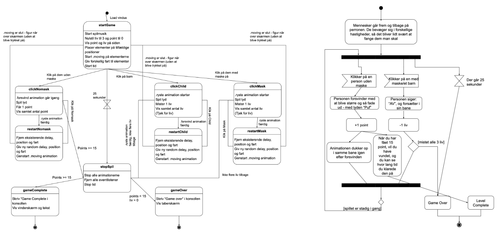

Grundlæggende Animation
Hovedopgaven
04.05.01. Individuelt spil
I temaet 'Grundlæggende Animation' udviklede jeg spillet "Catch The Face Mask Sinners". Vi blev introduceret til JavaScript som er den tredje og sidste komponent i "Den hellige treenighed" (HTML, CSS og JS). I udviklingen af spillet fik man her forståelse for brugen af JS sammen med CSS animationer. I starten af forløbet udviklede jeg henholdvis et 'Aktivitetsdiagramm' og et 'State Machine Diagrammet' for at få styr på det interaktive flow i spillet. Herunder bevægelser, animationer ved click og restart-funktion. I designprocessen havde jeg fokus på formegivningen af UI- og spilelementerne.
Jeg vil nedenunder se nærmere på processen og udviklingen af det endelige produkt via. delopgaverne:

Processen og udviklingen af produktet
04.01.02. Beskrivelse af stil og skitser på figurdesign og titelskærm og 04.01.05. Assetliste og designdokumentation
I udviklingen af designet af spillet valgte jeg at tage inspiration fra stilen og designet i Cartoon Network serien "PowerPuff Pigerne". På baggrund af serien, udviklede jeg et moodboard, hvor jeg herigennem kunne udvælge farver, former og fonte:

Designet i serien og spillet er flatdesign, som er meget enkelt og farverigt. Farverne i serien er nemlig meget skarpe og iøjenfaldende. Der er både de runde, afrundede, spidse og firkantede former. Det var blandt andet formgivningen af Utonium jeg valgte at fokusere på til min karakter. Jeg udviklede her politimanden med både asymmetri og symmetri, og samtidig består han både af fikantede og spidse former.

04.03.04 Statemachinediagram og 04.01.04 Aktivitetsdiagram til eget spil
To andre komponenter som var vigtige i udviklingen af spillet var 'Statemachindiagrammet' og 'Aktivitetsdiagrammet' som jeg udviklede til spillet.
